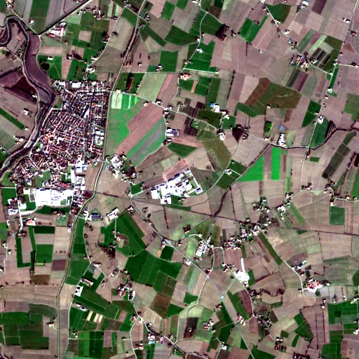

Benchmark / Near-lossless / s2-l1c-10m-4 / s2-l1c-10m-4-15
s2-l1c-10m-4-15
po-valley · 2023-12-24 · sample details

Metadata
| id | s2-l1c-10m-4-15 |
|---|---|
| source | COPERNICUS/S2 (Sentinel-2 MSI Level-1C) |
| asset | COPERNICUS/S2/20231224T101339_20231224T101542_T32TPQ |
| crs | EPSG:32632 |
| transform | 655370.0 10.0 0.0 4987800.0 0.0 -10.0 |
| datetime_start | 2023-12-24T10:18:29.787Z |
| datetime_end | 2023-12-24T10:18:29.787Z |
| bands | B2|B3|B4|B8 |
| shape | 4x512x512 |
| dtype | uint16 |
| unit | DN |
| scale | 1 |
| offset | 0 |
| nodata | 0 |
| input_sha256 | a40dbfb42acfd4d9b52b60a826541c4e451313cb52b09d06379f114180b2fa5b |
| site | po-valley |
| regime | cropland |
| lon | 11.004 |
| lat | 45.003 |
| spacecraft | Sentinel-2B |
| mgrs_tile | 32TPQ |
| processing_baseline | 05.10 |
| radio_add_offset | -1000|-1000|-1000|-1000 |